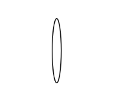
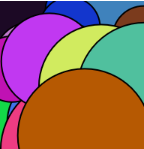
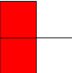
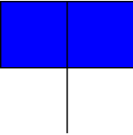
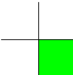
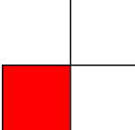

System variables are predefined variables that provide useful information about the sketch environment. Your task is to use the system variables width (representing the width of the browser window), height (representing the height of the browser window), frameCount (representing the number of frames rendered since the sketch started), and a constant value of 50 (representing the ellipse width) to draw an ellipse at the center of the canvas with the height of the ellipse constantly growing with the frameCount.
Expected Output:
Draw a shape with a random size, position, and color. Make sure that the shape is drawn whenever the mouse is pressed. Make sure to create variables for each random element of the shape.
Expected Output:
Draw the left side of the screen red whenever the mouse is on the left side of the screen.
Expected Output:
Modify the program in 5.3.1 to draw a blue rectangle on the top side of the screen when the mouse is positioned in the upper half of the canvas.
Expected Output:
Expand on the previous program in 5.3.2 to draw a green rectangle on the bottom-right side of the screen when the mouse is neither on the left side nor on the top side of the canvas.
Expected Output:
In this exercise, you'll enhance the program to check if the mouse is on the left side of the screen first, and then check if it's on the bottom side. If both conditions pass, you should draw a red rectangle on the bottom-left side of the canvas. Use a nested if statement to accomplish this task.
Expected Output:
Modify the program to check if the mouse is on the left side of the canvas AND the lower half of the screen using boolean operations. If both conditions are true, you should draw a red rectangle on the bottom-left side of the canvas
Expected Output: